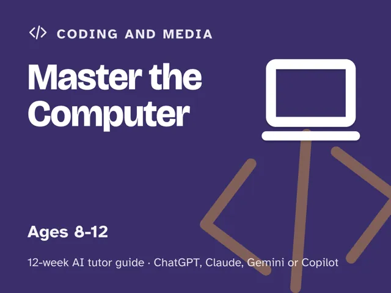
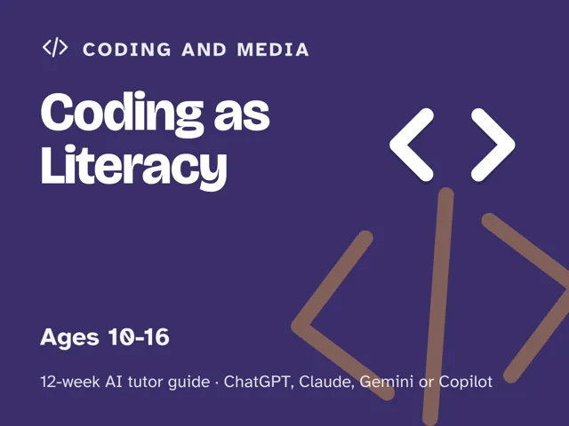

Coding as Literacy
$29Instant download: a PDF to read, a browser copy, and the AI-tutor file you hand straight to any AI assistant.Buy it on Etsy →
Take the free placement check first: 15 minutes, and it names the week to start at.
Turn screen time into something that teaches. This is a done-for-you, 12-week plan for guiding a 10–16-year-old (or a motivated adult) from their first line of code to a project they demo to the family, using an AI tutor to do the explaining while you do the leading. You do not need to know how to code.
What you get
- 12 deep weekly sessions, each built to run in about 60 minutes: a plain-language concept, a concrete worked example, a minute-by-minute session plan with the AI-tutor prompts built in, a "show me" checkpoint so you always know it landed, common mistakes to watch for, and independent practice.
- A "Never used an AI chat assistant? Start here" onboarding that takes about five minutes and gets a complete beginner from zero to ready (using a free AI assistant, no paid plan needed), plus a parent/teacher orientation on why the adult stays the leader and the AI is the tutor.
- Four rescue prompts up front for when the learner is stuck or frustrated, the AI starts writing the whole program, the work is too easy, or you want to check they really understand.
- You lead one ~60-minute session each week, and it's fully scripted: every step timed and written out for you. No expertise needed.
The 12 weeks
- Talking to Computers: what a program is; run your first line
- Remembering Things: Variables
- Making Decisions: If and Else
- Doing Things Again: Loops
- Words and Text: build a mad-libs machine
- Lists of Things: build a chooser the family actually uses
- Naming Your Ideas: Functions
- When It Breaks: Debugging (errors are clues, not failures)
- Project Week I: Plan It (the learner's first spec)
- Project Week II: Build It
- Make It Yours: polish and personalize
- Demo Day and the Road Ahead: present, reflect, choose what's next
Who it's for
Parents, teachers, and homeschoolers guiding a learner aged roughly 10–16. Works just as well for a motivated adult who's always meant to learn to code. No coding background needed; your job is one fully-scripted ~60-minute session a week, with every step written out for you.
Why this instead of a free chatbot
A raw chatbot will happily write the whole program for your learner, which teaches nothing. This pack ships the structure a chatbot lacks: a real 12-week arc, Socratic prompts that make the tutor ask before it tells, guardrails that stop it from handing over answers, and checkpoints that prove the learner can do it themselves. Curriculum + guardrails + a way to see progress. That's the difference.
FAQ
- Do I need to know how to code? No. The AI tutor explains; you lead. Every session comes with the exact prompt to start it.
- Which AI does it use? What if I've never used one? Works with any modern AI assistant (ChatGPT, Claude, Copilot, Gemini); free versions are enough, no paid plan needed. If you've never used an AI chat assistant before, the guide's first section walks you through setup in about five minutes.
- Is my child's data collected? Not by us. This is a digital guide sold to you, the adult. There's no login and no child account; you start and supervise each session under your own AI account, and the guide shows you how to keep personal details out of the chat.
- Does it work outside the US? Yes. The guide is written in US English, and every weekly launch prompt tells the AI to use your country or region for spelling, units, money, school terms, and examples.
- What ages? Roughly 10–16, and motivated adults.
- Refunds? Standard marketplace refund policy applies.
$29Instant download: a PDF to read, a browser copy, and the AI-tutor file you hand straight to any AI assistant.Buy it on Etsy →